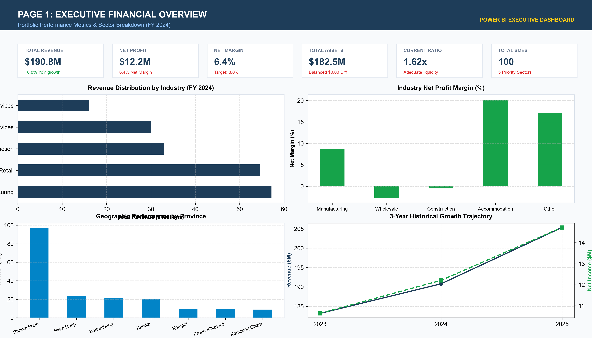
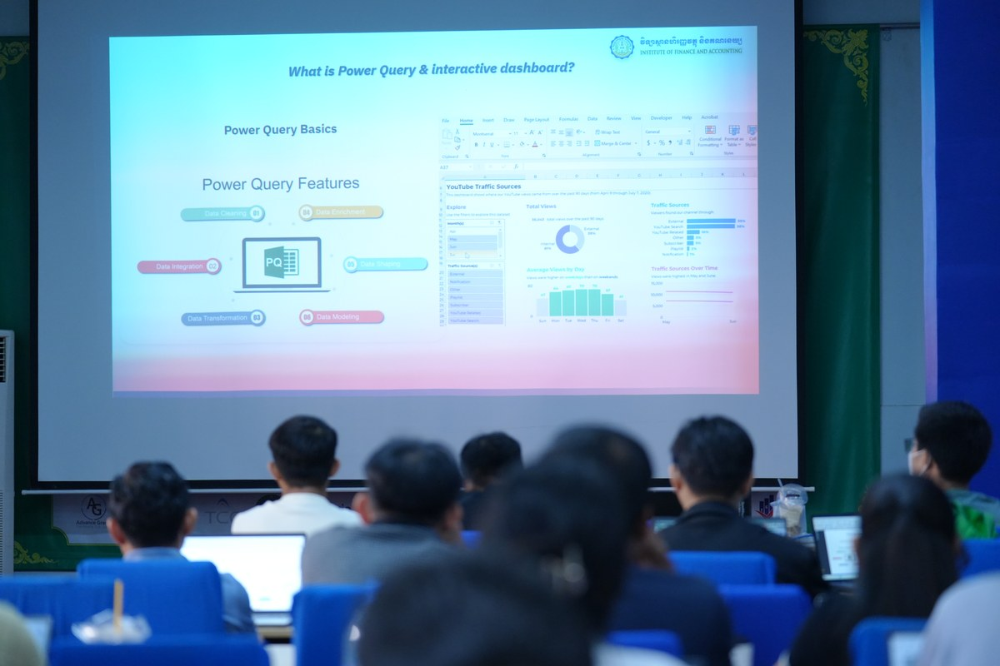
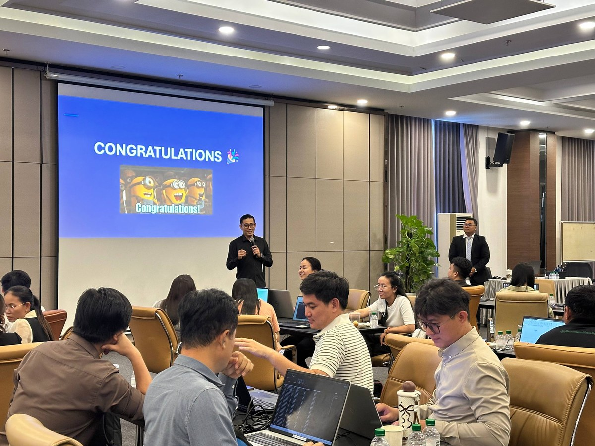
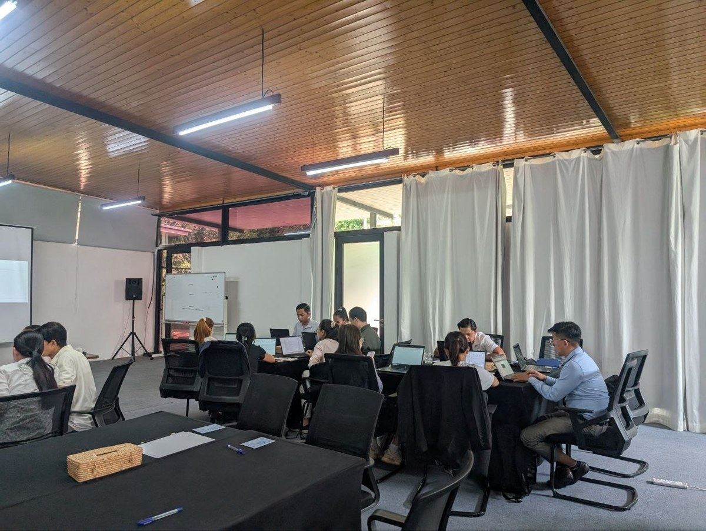
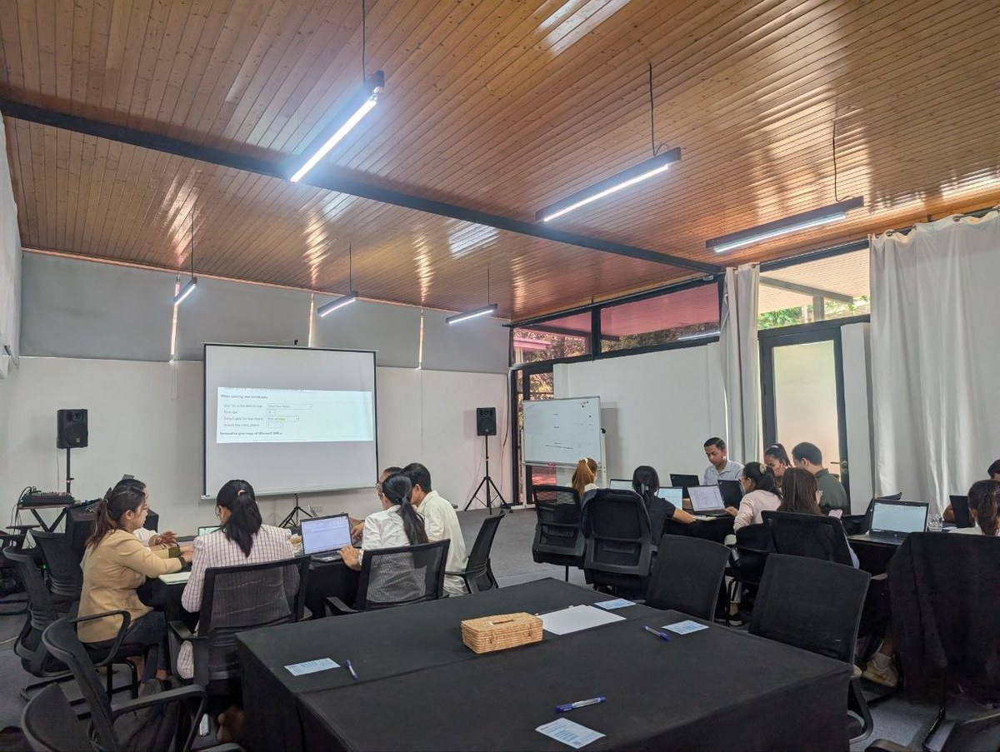
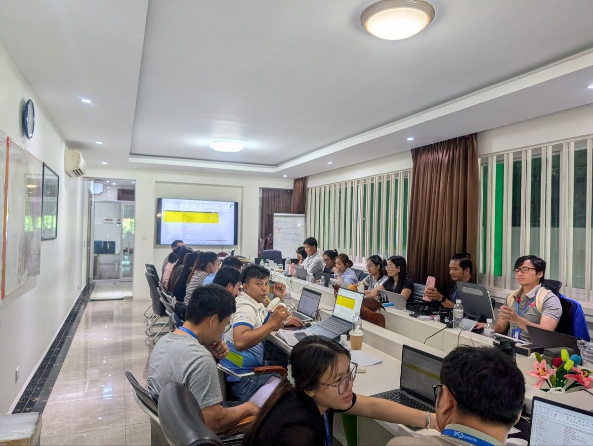
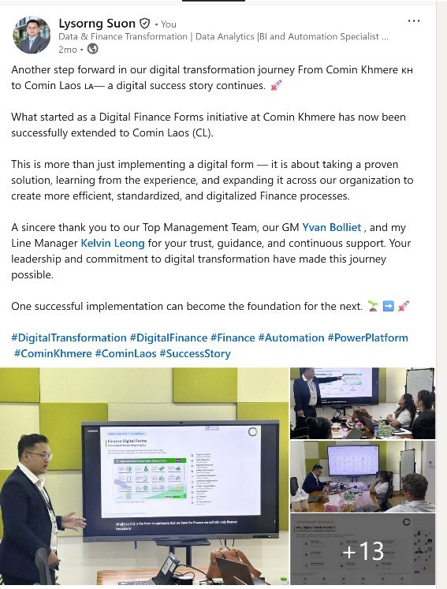

Turning Financial Data into Business Intelligence .
I am a Finance Data Analyst and Power BI & Excel Trainer focused on transforming financial and business data into meaningful insights, automated reporting, and better decision-making.
I connect finance, business operations, and technology by transforming business data into meaningful financial insights, automated reporting, and better decisions.
Connecting Finance, Business Operations & Technology
Transforming complex transactional spreadsheets into automated executive insights, verified financial models, and resilient business decisions.
"Data without financial context is just noise. Financial analysis without automated architecture is an operational bottleneck."
— Lysorng Suon
I am a dedicated Finance Data Analyst and professional corporate trainer specializing in Microsoft Power BI, Advanced Excel, SQL, and automated financial reporting architectures.
With over 8 years of professional experience spanning corporate finance, human resources, operations, and business intelligence, I have engineered enterprise analytics dashboards, automated multi-currency reporting workflows, and delivered data-driven decision frameworks for multinational corporations across Cambodia, Laos, Vietnam, and Australia.
Currently serving as Data Analyst at Comin Asia, I lead analytical initiatives that make financial reporting and operational analytics more dynamic, self-refreshing, and transparent. Previously at RMA Cambodia Group, I built automated reporting models for 8 operating entities that slashed routine manual data processing time by 50%.
In parallel with corporate practice, I am passionate about academic advancement and professional mentorship. As a certified trainer at the Institute of Finance and Accounting (IFA) and EuroCham Cambodia, I have guided over 3,000 students and corporate professionals in mastering Power Query ETL, star-schema data modeling, and advanced DAX measures.
My Three Professional Anchors
Every project and corporate training program is anchored in three tightly integrated disciplines:
Strategic Finance & Empirical Trust
Corporate finance requires uncompromising mathematical equilibrium. Every model adheres to double-entry balance sheet proof, transparent cash flow attribution, and empirical macroeconomic benchmarking.
- ✓ Balance Sheet Equilibrium ($0.00 Discrepancy)
- ✓ Credit Risk Sensitivity Scoring Models
- ✓ Working Capital & Cash Flow Diagnostics
Microsoft Excel & Automation
Moving beyond static workbooks. Harnessing Power Query ETL, dynamic array formulas, and automated reconciliation rules to convert messy operational inputs into self-updating financial pipelines.
- ✓ Automated Power Query Data Ingestion
- ✓ Dynamic 3-Statement Production Models
- ✓ 50% Time Reduction in Routine Reporting
Power BI & Business Intelligence
Elevating data into decision systems. Architecting star-schema tabular models, authoring robust DAX calculations, and crafting intuitive visual dashboards that C-level leaders rely on.
- ✓ Dimensional Star-Schema Architecture
- ✓ Advanced DAX & Time-Intelligence Measures
- ✓ Executive Multi-View Decision Portals
Cambodia SME Financial Intelligence & Credit Risk Analysis
An Applied Financial Analytics Framework for SME Financial Performance, Sustainability and Credit Risk Assessment in Cambodia.
1. Executive Financial Overview Dashboard
Consolidated financial performance KPIs, revenue distribution, and DuPont return decomposition.

The SME Financing Obstacle
In Cambodia, MSMEs represent 99.8% of establishments and 70% of employment. Yet 42.4% identify credit access as their primary obstacle with collateral demands averaging 158.5%.
Multi-Layered Engineering
Engineered across three integrated analytical layers: a 12-worksheet Microsoft Excel model, a star-schema Power BI model with 23 DAX measures, and a credit scorecard.
Methodological Integrity
Macro benchmarks strictly sourced from National Bank of Cambodia (NBC) and NIS. Micro data synthesized with strict double-entry balance equilibrium ($0.00 discrepancy).
Examine the full methodology and credit risk scorecard
Explore the 12 Excel model worksheets, DAX measures code, and sensitivity matrix.
Published International Research Papers
Academic contributions published in Digitalization and Knowledge: Ethical Challenges and Impact on Society, Editura Universitară, Romania (2026).
Romania and Cambodia: A Comparative Analysis of International Trade: Similarities and Differences
Suon Lysorng, Co-Authors
Empirical comparative analysis investigating bilateral trade architectures, export diversification, and economic transition dynamics between Eastern Europe and Southeast Asia.
Common English Errors Among University Students: A Comparative Analysis of Romania and Cambodia
Suon Lysorng, Co-Authors
Cross-national diagnostic study analyzing second-language structural and semantic acquisition challenges among university undergraduates across European and Asian higher education systems.
Enterprise BI & Financial Projects
Real-world analytics systems, automated financial pipelines, and executive dashboards delivered for international and multi-entity corporate clients.
Comin Asia Enterprise Digitization & SAP B1 Automation
Modernized 36 business forms across 8 departments replacing external SAP modules with Power Platform. Built Expense Claim automation integrated via SAP Business One Service Layer API for automated Journal Entry posting.
Comin Khmere Accounts Receivable & P&L Dashboard
Built an executive Power BI financial dashboard consolidating multi-departmental Excel financial statements, accelerating monthly P&L comparison and overdue Accounts Receivable tracking.
EFG Cambodia Compensation & Benefits Analytics
Designed and deployed a comprehensive HR & Payroll financial analytics system integrating multi-brand restaurant payroll data into interactive Power BI executive dashboards.
Minecorp Australia Workforce Planning Analytics
Developed an international workforce planning dashboard tracking attrition trends, recruitment progress, and talent qualification matching across multiple industrial operations.
RMA Laos HR & Training Intelligence Portal
Consolidated over 7,000 multi-entity organizational records into a unified Power BI management portal covering learning progress, performance ratings, and human capital metrics.
RMA Group Customer Sales & Service Platform
Built an end-to-end customer intelligence solution connecting 8 transactional database tables via Power Query ETL to evaluate automotive sales performance and service turnaround.
Specialized Skills Across 3 Core Disciplines
A cohesive balance of corporate financial rigor, high-performance data modeling, and workflow automation.
Rigorous corporate finance analysis, dynamic multi-statement modeling, and executive variance diagnostics.
Balance Sheet equilibrium, multi-step P&L, direct/indirect Cash Flow analysis
Profitability (ROA, ROE), Liquidity (Current, Quick), Solvency (D/E)
Multi-criteria risk screening scorecards and sensitivity models
Scenario planning (Optimistic, Base, Adverse), growth driver projections
Enterprise dimensional data modeling, complex DAX formulation, and interactive dashboard engineering.
Star-schema tabular architecture, PBIR v4.0, TMDL, enterprise deployment
Time intelligence, dynamic aggregations, CALCULATE context transition
Automated ETL pipelines, schema validation, multi-source consolidation
Relational queries, Pandas data validation, automated verification
Eliminating manual reporting bottlenecks through automated pipelines, governance, and technology.
Reduced routine reporting turnaround by 50% across corporate divisions
Dynamic array formulas, advanced lookup arrays, financial engineering
Automated accounting balance checks and longitudinal schema audits
Transitioning legacy spreadsheets into self-refreshing BI models
Software, Languages & Architecture Standards
Daily tools utilized across enterprise financial reporting and data modeling.
Professional Experience & Corporate Leadership
Over 8 years of applied experience driving financial data analytics, reporting automation, and operational efficiency.
Data Analyst
Driving the digital transformation of all business divisions, with a specialized focus on making financial reporting and operational analytics dynamic, automated, and data-driven.
- ✓ Design executive KPI dashboards for C-suite and division directors.
- ✓ Formulate predictive baseline models to forecast project delivery outcomes and budget variances.
- ✓ Establish enterprise data management and governance best practices ensuring strict data integrity.
Human Resource & Data Analyst
Architected centralized databases, automated reporting pipelines, and interactive analytics dashboards supporting 8 major business entities across Cambodia, Laos, and Vietnam.
- ✓ Engineered automated reporting models in Excel and Power BI that reduced data processing time by 50%.
- ✓ Built production dashboards including P&L, Accounts Receivable, GL, Sales, Attrition, C&B, and CRM scorecards.
- ✓ Supported AVR, BSP Finance, Comin Khmere, Comin Lao, Comin Vietnam, EFG, and RMA Automotive.
Executive Leadership & Strategic Communication
Managing Director at Flourishing Dev Co. Ltd (2022–2023) leading operations, marketing budgets, and corporate outreach. Club President at Agora Speakers Club (2020–2021) mentoring young professionals in communication and public leadership.
Empowering 3,000+ Professionals in Data & Finance
Bridging academic concepts and real-world executive reporting through hands-on masterclasses grounded in real corporate data challenges.
Power BI for Financial & Business Intelligence
Hands-on curriculum guiding professionals to construct self-refreshing, production-grade BI dashboards from corporate financial statements.
- ✓ Power Query ETL for financial statements
- ✓ Star-schema dimensional modeling
- ✓ CALCULATE and Time-Intelligence DAX
- ✓ Executive dashboard storytelling
Masterclass: Advanced Excel & Data Pipelines
Designed for corporate working teams seeking to eliminate repetitive weekly spreadsheet compilation and establish robust pipelines.
- ✓ Multi-source workbook consolidation in Power Query
- ✓ Dynamic array formulas & lookup models
- ✓ Financial modeling error-proofing rules
- ✓ Automated management reports
Regional Analytics & HR Scorecard Training
Internal corporate training empowering analytical teams across Cambodia and Laos to build automated operational tracking systems.
- ✓ Cross-border metric standardization
- ✓ Attrition & recruitment funnel analytics
- ✓ Compensation transparency models
- ✓ Board-level visual summaries
Live Training Gallery Organized by Topic
Authentic workshop photos categorized by training program and institutional venue.






Education, Global Fellowships & Certifications
Rigorous undergraduate studies in SME management and international business, enhanced by competitive international fellowships and tier-one finance certifications.
ACCA / FIA / CAT (Foundations in Accountancy)
Passed FA1 (Recording Financial Transactions). Actively pursuing international accounting qualification alongside full-time analytics leadership, mastering international financial reporting, double-entry audit rigor, and management accounting.
Erasmus+ Mobility for Higher Education
Selected for the prestigious European Union Erasmus+ mobility grant, conducting advanced coursework and academic research in European business management, financial analytics, and educational digital transformation.
IATSS Forum Leadership Development (Batch 65th)
Completed intensive full-scholarship leadership and public policy training in Japan, focusing on collaborative problem-solving, sustainable economic development, and cross-cultural executive governance.
Bachelor of SMEs Management
Rigorous undergraduate curriculum in small-and-medium enterprise operational management, financial record-keeping, entrepreneurial strategy, and corporate compliance in emerging markets.
Bachelor of Business Administration (BBA)
Focused on international business administration, corporate economics, organizational behavior, and advanced academic and professional English communication.
Professional Credentials & Finance Certifications
Verified coursework completed across global finance institutions, corporate modeling academies, and data analytics tracks.
Foundations of Finance
University of Cambridge
Corporate Finance & Valuation (CFVM)
New York Institute of Finance (NYIF / edX)
Leading in Finance
Harvard Business School Online
Forecasting Financial Statements
New York Institute of Finance (NYIF)
Advanced Microsoft Excel Master Trainer
Institute of Finance and Accounting (IFA)
Power BI Data Analyst Associate Track
Microsoft Learn / IFA Institute
Let's Discuss Finance, Data & Training
Open for corporate training masterclasses, enterprise BI consulting, financial reporting automation, and academic research collaborations.
Direct Contact Information
Official Portfolios & Documents
Send a Direct Message
Fill in the details below to open a pre-formatted email message.